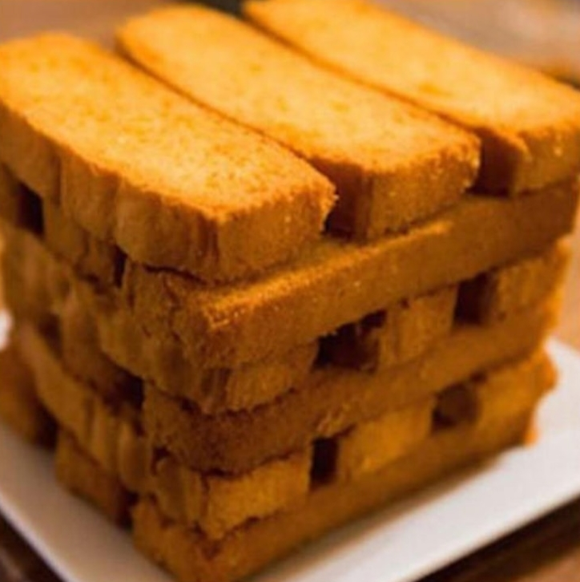
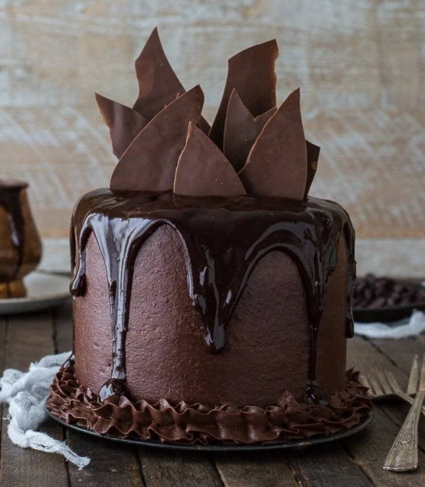
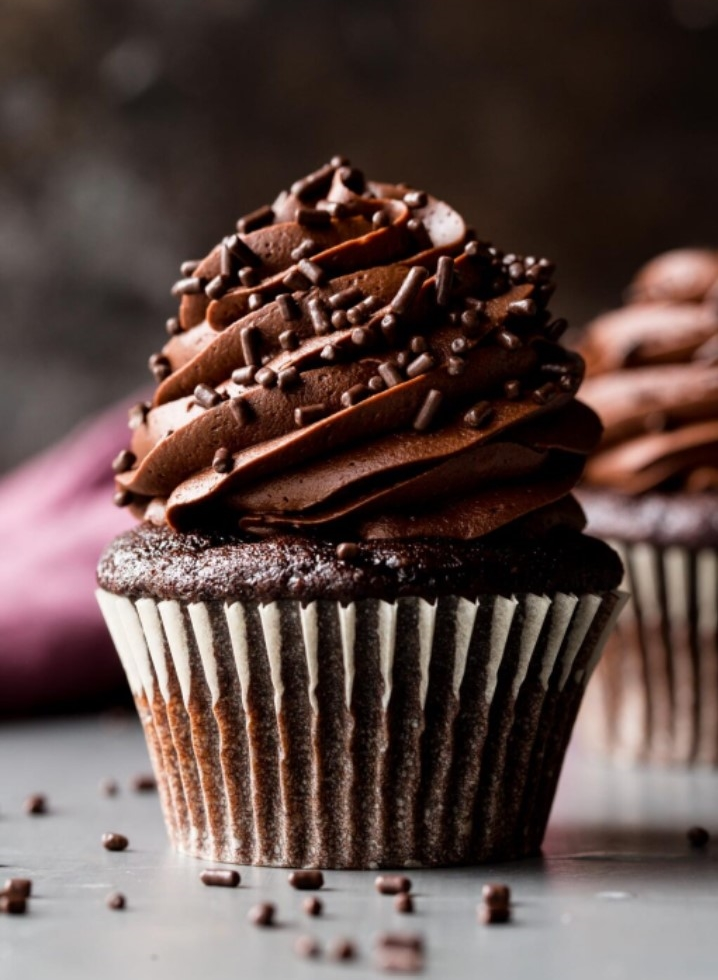

A rusk is a hard, dry biscuit or a twice-baked bread. It is sometimes used as a teether for babies. In some cultures, rusk is made of cake, rather than bread: this is sometimes referred to as cake rusk. In the UK, the name also refers to a wheat-based food additive.

Bread is a staple food prepared from a dough of flour (usually wheat) and water, usually by baking. Throughout recorded history and around the world, it has been an important part of many cultures' diet. It is one of the oldest human-made
foods, having been of significance since the dawn of agriculture.
I love to eat cake in the morning, so my mother prepares cake in the evening, and puts it on the table. When I wake up in the morning, I eat a piece of cake with a cup of tea, then go to school. Cake is a useful food meal. It contains eggs that provide us with protein. In addition to that it contains carbohydrates and fats that provide us with energy.

Cupcakes, is usually small cake design for one person, just like a standard cakes, cupcakes are baked in small thin paper or aluminum cup, with icing and decorations to follow up. The earliest documentation of the term cupcake was in "Seventy-five Receipts for Pastry, Cakes, and Sweetmeats" in 1828 in Eliza Leslie's Receipts cookbook,
